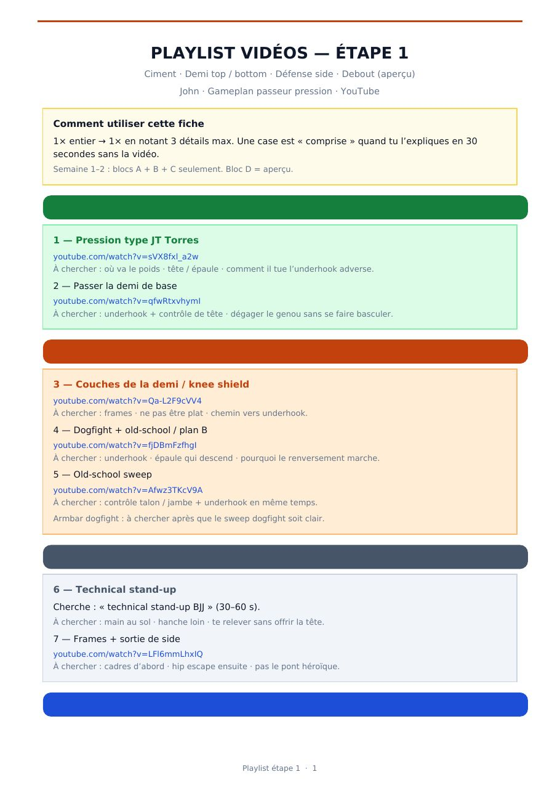
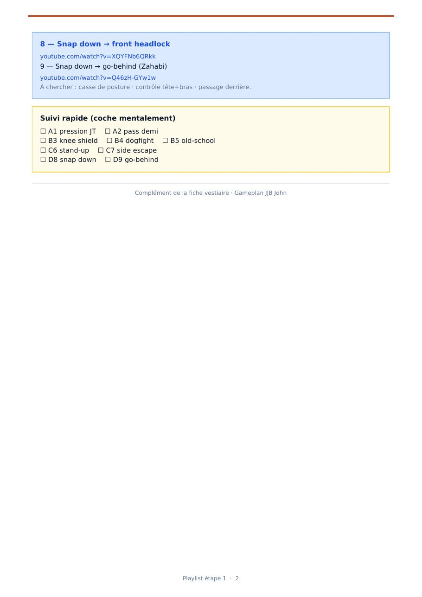

← Réflexes
Playlist étape 1
Swipe ⇆ · page
1
/2


▶️ Vidéos (un clic = YouTube)
1. Pression JT Torres
2. Passer demi de base
3. Couches demi / knee shield
4. Dogfight + old-school
5. Old-school sweep
7. Frames + sortie side
8. Snap down → front headlock
9. Snap down → go-behind